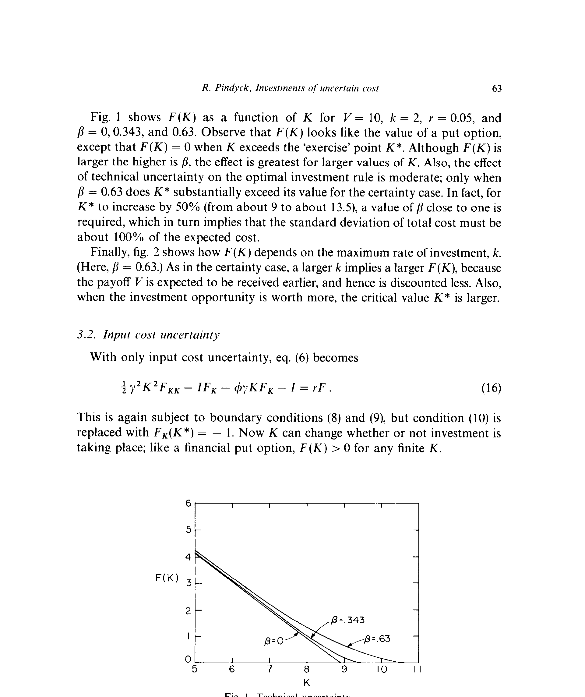
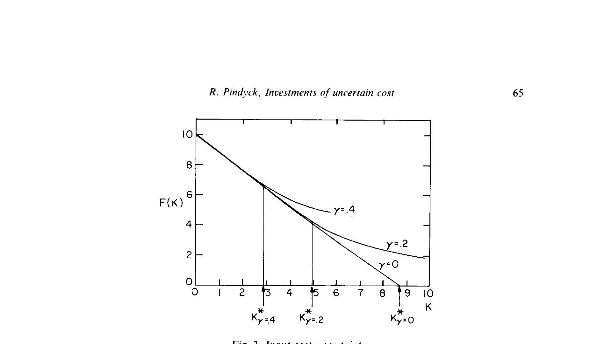
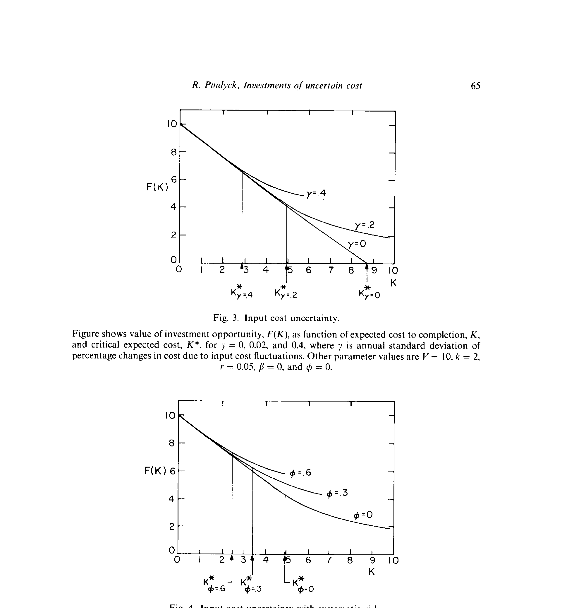
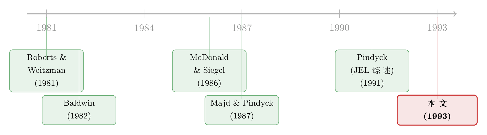

成本是一道还没揭晓的谜题：当不确定性藏在「花多少钱」而不是「赚多少钱」里
本文读的是 Pindyck (1993, Journal of Financial Economics)：当一项不可逆投资的「成本」本身是随机的，不确定性会从两个完全相反的方向拉扯投资决策——技术不确定性让你更想现在就动手，投入价格不确定性却让你更想再等等。一条简洁的决策规则把两者统一了起来：只要「完工的期望成本」低于某个临界值 K*，就以最大速度投下去。
1 引言：我们一直盯错了地方
几乎所有「不确定性下的投资」研究，盯着的都是同一件事——未来的回报有多不确定。一座工厂建成之后能卖多少钱？一只新药上市之后市场有多大？人们把这些回报的波动写进几何布朗运动，然后求解一个最优停时（optimal stopping）问题，得到那条著名的结论：因为投资不可逆，你应该等到项目价值 V 相对于沉没成本 I 高出一截，才肯出手。
但 Pindyck 在这篇论文里提出了一个被长期忽略的问题：对于很多大项目，真正算不准的不是「能赚多少」，而是「要花多少」。
想一想核电站。它建成之后发的电值多少钱，当然不确定；可在 1980 年代的美国，比这更要命的是——你根本不知道把它建起来要烧掉多少钱。工程难度、监管变更、工期一拖再拖，让总建造成本的波动远远盖过了收入端的波动，以至于电力公司干脆不敢再上新机组。petrochemical 联合体、一款新机型飞机、一种新药的研发，无不如此。它们有两个共同点：成本极不确定，而且投下去的钱收不回来（不可逆）。
于是一个自然的问题是：当不确定性从「回报端」搬到「成本端」，那条经典的「等待」直觉，还成立吗？
答案是「一半成立，一半反转」。而这篇论文最漂亮的地方，正是它把成本不确定性拆成了两种，并证明这两种对投资决策的影响方向相反。
2 两种不确定性：一个向左拉，一个向右拉
Pindyck 把成本不确定性切成了两块，名字起得很讲究。
第一种叫技术不确定性（technical uncertainty）。 它问的是：假定建造投入的价格都已知，这个项目在物理上到底有多难干完？要多少时间、多少人力、多少材料？关键在于——这种不确定性只能靠「真的去干」来揭晓。 你不投，就永远不知道。而且它基本是可分散的（diversifiable）：一个项目难不难干，跟整体宏观经济没什么关系。
第二种叫投入价格不确定性（input cost uncertainty）。 它来自外部：劳动力、土地、材料的价格会无法预测地波动，政府的监管也会变。这些变化不管你投不投资都在发生，而且你看得越远，它越模糊。更要命的是，它可能是不可分散的——建造成本往往和宏观经济正相关。
现在，先来看两个 Pindyck 在引言里给的小例子，它们把全文的张力一次性点透了。
技术不确定性，让 NPV 为负的项目也值得开工。 一个项目第一期要投 \$1。投完之后，有 0.5 的概率就此完工，有 0.5 的概率还需要再投 \$4 的第二期。完工能拿到确定的 \$2.8。算一下期望成本是 \$3，传统 NPV 是负的。但传统 NPV 漏算了一件事：如果第二期真的需要，你可以选择放弃。 正确的 NPV 是 -1 + (0.5)(2.8) = $0.4 ——是正的！所以至少第一期应该投。投资本身有了一重「影子价值」：它在揭示成本信息。而且，因为信息只在你投资时才到来，等待毫无价值。
投入价格不确定性，却让 NPV 为正的项目也不该现在投。 现在的成本是 \$3，下期会等概率地跌到 \$2 或涨到 \$4，然后稳定下来。完工拿确定的 \$3.2，无风险利率为零。现在就投，传统 NPV 是 \$0.2。可如果等一期，只在成本跌到 \$2 时才投，NPV 是 (0.5)(3.2 - 2) = $0.6 ——等待更好。这一次，等待有了价值，因为成本会自己变，你不必动手也能等到好消息。 更妙的是，如果成本的 beta 很高，把风险调整折现率设成 25%，等待的 NPV 变成 (0.5)(3.2 - 2/1.25) = $0.8，比刚才还高——高 beta 反而加大了「等」的好处。
一个让你更想动手，一个让你更想等待。接下来真正关键的一步，是把这两种力量装进同一个连续时间模型里。
3 模型：把「期望成本」做成一个受控扩散过程
先看没有不确定性的基准。项目的完工总成本是随机变量 \(\tilde{K}\)，期望成本 \(K = E(\tilde{K})\)；公司最快只能以速率 \(k\) 投资，所以完工要花时间 \(T = K/k\)；完工后拿到确定价值 \(V\)。这时投资机会的价值是把回报折现、减去摊开的投资流：
$$ F(K) = \max\!\left[\,(V + k/r)\,e^{-rK/k} - k/r,\; 0\,\right] $$
最优规则是只要 \(F(K) > 0\) 就开工，即 \(K\) 低于一个临界值：
$$ K^* = (k/r)\log\!\left(1 + rV/k\right) $$
注意：若 \(r = 0\)，则 \(F(K) = V - K\)、\(K^* = V\)；但只要 \(r > 0\)，就有 \(K^* < V\)。原因很直白——回报 \(V\) 要等到 \(T\) 时才拿到、得折现，可成本却从一开始就在花。
3.1 把不确定性写进成本的运动方程
真正的核心，是让「期望完工成本」\(K(t)\) 服从一个受控扩散过程（controlled diffusion process）：
$$ dK = -I\,dt + g(I, K)\,dz $$
这里 \(I\) 是投资速率，\(z(t)\) 是维纳过程。这个方程在说一件很有画面感的事：投资会让期望完工成本下降（\(-I\,dt\) 项），但成本同时也在随机地抖动（\(g\,dz\) 项）。 抖动从哪来？如果是技术不确定性，那么不投资时成本不动（\(g(0,K) = 0\)）；如果是投入价格不确定性，那么不投资成本也在动（\(g(0,K) > 0\)）。
Pindyck 要求这个设定满足几条经济上必须成立的条件（一次齐次、\(F_K < 0\)、当 \(K \to 0\) 时方差趋于零、以及 \(K\) 确实是期望完工成本），最后挑出一个既满足条件又足够一般的函数形式：
$$ g(I, K) = \beta K\,(I/K)^{\alpha}, \qquad 0 \le \alpha \le \tfrac{1}{2} $$
接着是全文的「点睛之笔」：两种不确定性，恰好对应 \(\alpha\) 的两个端点。
- \(\alpha = \tfrac{1}{2}\) 对应技术不确定性：\(K\) 只在公司投资时才会变，\(dK/K\) 的瞬时方差随 \(I/K\) 线性上升。你只有边干边付，才能知道这项目到底有多难。
- \(\alpha = 0\) 对应投入价格不确定性：\(dK/K\) 的瞬时方差恒定、与 \(I\) 无关。不管你干不干，劳动力和材料价格都在变 \(K\)。
把两者合并进一个方程，得到最一般的成本演化：
$$ dK = -I\,dt + \beta (IK)^{1/2}\,dz + \gamma K\,dw $$
其中 \(dz\) 与 \(dw\) 是不相关的两个维纳过程；我们假设 \(dz\) 的风险完全可分散（与市场无关），但 \(dw\) 可能与市场相关。\(\beta\) 度量技术不确定性的强度，\(\gamma\) 度量投入价格不确定性的强度。
3.2 最优投资规则：用复制资产消掉折现率
既然 \(dw\) 可能与市场相关，就不能简单地拿无风险利率去折现。Pindyck 用的是或有权益（contingent claims）方法：假设存在一个与 \(w\) 完全相关的资产（或动态组合）\(x\)，它满足 \(dx = \alpha_x x\,dt + \sigma_x x\,dw\)，由 CAPM 它的风险调整期望回报是 \(r_x = r + \theta\rho_{xm}\sigma_x\)。这样就能把那个不好确定的折现率 \(\rho\) 替换成无风险利率 \(r\)，代价是引入一个参数 \(\phi = (r_x - r)/\sigma_x = \theta\rho_{xm}\)。
\(\phi\) 里唯一与项目相关的量是 \(\rho_{xm}\)——也就是成本波动与股市的相关系数。\(\theta\) 是全经济的市场风险价格（论文用 NYSE 1926–88 数据估出 \(\theta \approx 0.4\)）。这一步把「成本的系统性风险」干净地塞进了一个数字里。
附录证明，\(F(K)\) 必须满足下面这个偏微分方程。这是全文的心脏，我们用带标注的方式把它拆开看：
因为这个方程对 \(I\) 是线性的，使最优 \(F(K)\) 最大化的投资速率永远取两个极端之一——要么全速 \(k\)，要么干脆不投：
$$ I = \begin{cases} k, & \tfrac{1}{2}\beta^2 K F_{KK} - F_K - 1 \ge 0 \\[4pt] 0, & \text{otherwise} \end{cases} $$
这就是那条「简单到出人意料」的决策规则的来源：方程有一个自由边界 \(K^*\)，当 \(K \le K^*\) 时全速投，否则停手。求解需要配合边界条件——完工时 \(F(0) = V\)，成本极大时 \(\lim_{K\to\infty} F(K) = 0\)，以及在 \(K^*\) 处的平滑粘合（smooth pasting）条件 \(\tfrac{1}{2}\beta^2 K^* F_{KK}(K^*) - F_K(K^*) - 1 = 0\)。当 \(I = 0\) 时方程有解析解 \(F = aK^b\)，其中 \(b\) 是二次方程 \(\tfrac{1}{2}\gamma^2 b(b-1) - \phi\gamma b - r = 0\) 的负根。
4 解的性质：方向相反的两幅图
把模型解出来，两种不确定性的「相反性格」就一目了然了。
4.1 纯技术不确定性：温和地抬高门槛
只留技术不确定性（\(\gamma = 0\)）时，当 \(r = 0\) 有漂亮的解析解，临界值是
$$ K^* = \left(1 + \tfrac{1}{2}\beta^2\right) V $$
注意 \(\beta > 0\) 时 \(K^* > V\)，而且 \(K^*\) 随 \(\beta\) 递增——不确定性越大，可以开工的最大期望成本越高。 这正是引言里那个「NPV 为负也值得投」的连续时间版本：投资在揭示信息，这重影子价值压低了真实的期望成本。
但 Pindyck 很诚实地指出：这个效应其实相当温和。取 \(V = 10\)、\(k = 2\)、\(r = 0.05\)，当 \(\beta\) 从 0 升到 0.343（对应成本标准差 25%）再到 0.63（标准差 50%），如下图所示——只有 \(\beta = 0.63\) 时 \(K^*\) 才明显超过确定性情形。要让 \(K^*\) 抬高 50%（从约 9 升到约 13.5），\(\beta\) 得接近 1，也就是说总成本的标准差要达到期望成本的约 100%。

Figure I: Technical uncertainty
为什么把方差和 \(\beta\) 联系起来？附录给出，当 \(\gamma = 0\) 时完工成本的方差是
$$ \mathrm{var}(K) = \left(\frac{\beta^2}{2 - \beta^2}\right) K^2 $$
由此反推：标准差 25% 对应 \(\beta = 0.343\)，标准差 50% 对应 \(\beta = 0.63\)。这两个数在现实项目里都不算罕见，所以成了后文计算的基准。
这里还有个被低估的洞见：在技术不确定性下，投资机会的价值随最大投资速率 \(k\) 上升而上升——能投得越快，回报 \(V\) 越早到手、折现越少，于是临界值 \(K^*\) 也越大。
4.2 纯投入价格不确定性：狠狠地压低门槛
换成纯投入价格不确定性（\(\beta = 0\)），故事整个反过来。首先一个有意思的细节：当 \(\gamma > 0\) 时，\(r = 0\) 根本无解——因为如果不用折现，你总是更愿意一直等到 \(K\) 跌到接近零再投，哪怕要等很久也无所谓。正是折现，才让「等待」有了机会成本，才让现在投资变得有意义。
数值解（\(V = 10\)、\(k = 2\)、\(r = 0.05\)、\(\phi = 0\)）显示，即便 \(\gamma\) 只有 0.2，对投资机会价值和临界 \(K^*\) 都有可观影响：\(\gamma = 0.2\) 时的 \(K^*\) 大约只有 \(\gamma = 0\) 时的一半。 换句话说，一个正确的 NPV 规则会要求回报大约是期望成本的两倍，你才该动手。这个量级和 McDonald & Siegel (1986)、Majd & Pindyck (1987) 在「回报不确定」情形下得到的结果遥相呼应——投入价格不确定性的影响，丝毫不比回报不确定性小。

Figure 3: Input cost uncertainty
再叠加系统性风险 \(\phi\)。\(\phi = \theta\rho_{xm}\)，合理取值应小于 \(\theta \approx 0.4\)，大约在 0.1 到 0.3 之间。如下图所示，\(\phi\) 越大，\(F(K)\) 越高、\(K^*\) 越低——成本的 beta 越高，越该等待。 直觉是：高 beta 意味着「高成本」更可能与「高股市回报」相伴，于是这个投资机会本身成了对不可分散风险的一种对冲；同时高 beta 抬高了对未来成本的折现率，既抬高了机会的价值，也抬高了等待的好处。

Figure 4: Input cost uncertainty with systematic risk
到这里，全文的核心已经讲透了：成本不确定性不是一个东西，而是两个性格相反的东西。 把它们混为一谈，你会同时高估和低估投资门槛；只有分开处理，模型才能告诉你——对核电站这类项目，哪一种不确定性才是主导。
5 文献脉络：从「回报不确定」到「成本不确定」
这条研究的来路，是一部「我们到底在为什么而等待」的演进史。
最早把「不可逆 + 不确定」做成最优停时的，是 McDonald & Siegel (1986)：付沉没成本 \(I\) 换价值 \(V\)，\(V\) 与 \(I\) 都走几何布朗运动，最优规则是等到 \(V/I\) 超过某个大于 1 的临界值——这是「等待的价值」的经典表述。Majd & Pindyck (1987) 把它推进到「需要时间建造」的序贯投资，但不确定的仍是完工后的价值。

另一条线则更早地盯上了「成本」。Roberts & Weitzman (1981) 建了一个序贯投资模型，项目可中途停止，投资既降低期望完工成本、也降低其方差，他们证明哪怕整个项目 NPV 为负也可能值得先投早期阶段——这正是本文技术不确定性那一支的思想源头。Baldwin (1982) 则从「机会随机到来、资源有限」的角度，说明简单 NPV 规则会导致过度投资，等待更好的机会有价值。Grossman & Shapiro (1986) 和 Myers & Majd (1984) 各自补上了「不确定的总努力」和「放弃期权」的拼图。
Pindyck (1993) 站在这两条线的交汇处：他既继承了 Roberts–Weitzman 把成本写成受控随机过程的传统，又把 McDonald–Siegel 的「等待」直觉搬到了成本端，并第一次把成本不确定性清晰地一分为二，用一个 \(\alpha\) 参数把两者统一在同一个 PDE 里。两年后，他与 Dixit 合著的 Investment under Uncertainty (1993) 成了这整个领域的「圣经」。
（关于「不确定性下何时行权」的实证检验，可参见《一座金矿什么时候关门？》；而本文「技术风险可分散却仍影响折现率」的直觉，在新创企业估值里有直接回响，见《R&D 的技术风险明明是「赌运气」，为什么它的折现率反而更高？》。）
6 评论与延伸（Q&A + 研究方向）
(a) 几个可能的疑问
Q：技术不确定性和投入价格不确定性，到底凭什么效果相反？
关键在于「不确定性何时揭晓」。技术不确定性只在你投资时才解锁信息——既然不投就什么都学不到，那就没有等待的价值，反而要趁早开工去「买」信息。投入价格不确定性则不管你动不动都在演化，于是它给了你一个免费的期权：站着不动，也能等到成本下跌的好消息。一个把信息绑在行动上，一个把信息留给时间，方向自然相反。
Q：「技术不确定性让 NPV 为负也该投」，这是不是在鼓励乱花钱？
不是。传统 NPV 算错了，因为它把「完工总成本」当成一个确定数，忽略了中途放弃的期权。正确的算法里，投资的真实期望成本要减去那重「揭示信息」的影子价值。引言那个
-1 + 0.5×2.8 = 0.4的例子说明：你只承诺第一期的 \$1，第二期的 \$4 是「看情况再说」。所以这不是乱投，而是把期权价值算进去之后的理性投资。
Q：为什么投资规则是「要么全速、要么不投」，没有中间速度？
因为 PDE (6) 对投资速率 \(I\) 是线性的。线性目标在约束区间 \([0, k]\) 上的最优解必然落在端点，这就是所谓的角点解（corner solution / bang-bang control）。Pindyck 特意选 \(\alpha = 0\) 和 \(\alpha = \tfrac{1}{2}\) 这两个值，正是因为它们给出这种干净的角点解。论文也提到，\(0 < \alpha < \tfrac{1}{2}\) 的中间值会带来内部解，公司会根据 \(dK\) 的方差去调节 \(I\)——那是更复杂的故事。
Q：成本的 beta（\(\phi\)）那条逻辑，会不会反直觉？高风险不是该让人却步吗？
表面看是反直觉，细想很顺。高 beta 意味着「成本高」常和「股市好」同时发生，所以一个「将来要付高成本」的负债，恰好在你最富有的时候才咬你——这等于天然对冲了系统性风险，于是投资机会更值钱。同时高 beta 抬高了未来成本的折现率，让「现在锁定成本」显得更亏、「等待」显得更划算。注意：这条只对投入价格不确定性成立，因为技术不确定性被假设为可分散，\(dz\) 与市场无关。
Q：这个模型假设完工价值 \(V\) 确定，现实里 \(V\) 明明也随机，会不会让结论失效？
Pindyck 在第 5 节说明模型可以扩展到 \(V\) 随机的情形。核心论点不变：只要成本不确定性远大于回报不确定性（核电站正是如此），把成本拆成两种来分析的价值就成立。当然，若两端不确定性相当，就需要同时建模，决策规则也不再是单一临界值那么简洁。
Q：核电站那个应用，最大的现实意义是什么？
它示范了模型怎么用来回答一个真问题：1980 年代一座在建核电站，该续建还是该弃建？答案取决于「剩余的期望完工成本」是否还低于 \(K^*\)，而 \(K^*\) 又取决于技术不确定性和投入价格不确定性各占多大。论文的潜台词是：当年很多机组之所以被叫停，未必是回报不行，而是投入价格（含监管）不确定性把 \(K^*\) 压得太低了。
(b) 几个可能的研究问题与提案
1. 把两种不确定性的「分解」搬到信用市场的项目融资里。 【经济故事】基础设施、能源、数据中心这类项目，债务往往是按「完工成本」分期放款的。如果能把技术不确定性（边干边揭晓）和投入价格不确定性（外生波动）分开，理论上贷款人对两者的定价应当不同——前者随工程进度收敛，后者一直悬着。这会直接影响 project finance 里分期放款的利差结构。 【可行性】中。需要逐笔的项目贷款数据（如 Dealogic ProjectWare）和成本超支记录；识别难点在于区分「成本涨是因为难干」还是「因为材料涨价」，可借助行业级投入价格指数作为外生 \(\gamma\) 的代理。
2. 外资持有人会不会改变企业面对「投入价格不确定性」的等待行为？ 【经济故事】本文说 \(\phi\)（成本与市场的相关性）越高越该等待。外资股东的边际风险价格 \(\theta\)、相关性结构可能与本地股东不同，于是同一个项目在「外资主导」与「本地主导」的公司里，最优开工时点会不一样。 【可行性】中偏低。需要跨国的项目级资本支出数据 + 股东国籍构成；识别靠外资持股的外生变动（如指数纳入、QFII 额度放开）。诚实地说，把「成本端 beta」干净地估出来很难，这是主要障碍。
3. 用核电站之外的「成本超支」面板，实证检验 \(K^*\) 规则。 【经济故事】本文给了一条可证伪的预测：弃建/续建的临界点取决于剩余期望成本与 \(K^*\) 的比较，而 \(K^*\) 随技术不确定性升、随投入价格不确定性（及其 beta）降。大型公共工程、半导体 fab、新药 III 期试验都能提供「中途放弃」事件。 【可行性】高。这类项目的里程碑、成本估计修订、放弃决策常有公开披露；可仿照金矿实物期权的实证范式（见上文交叉引用），用结构估计反推隐含的 \(K^*\)。
4. 把「投资揭示成本信息」这一影子价值，接到学习型实物期权的机器学习估值上。 【经济故事】技术不确定性的精髓是「投资 = 买信息」。现代深度代理（deep surrogate）方法可以把高维的、含学习的最优停时问题数值求解，从而把 Pindyck 的二维 \(\alpha\) 设定推广到多源、相关的成本冲击。 【可行性】中高。纯数值/方法论工作，不需要新数据；价值在于把 1993 年只能取两个端点的解析便利，扩展到现实中介于两者之间的连续谱。
7 我的判断
这篇论文的贡献，不在于数学有多复杂，而在于它重新定义了问题。在「不确定性下的投资」几乎被等同于「回报不确定性」的年代，Pindyck 指出成本端同样重要，并且——这才是真正的洞见——成本不确定性不是铁板一块，而是两种方向相反的力量。一个 \(\alpha\) 参数把「投资是买信息」和「等待是买期权」统一在同一条 PDE 里，最后落到一条 K < K* 就全速投的简洁规则上，这是理论建模的范本。
对识别（这里是「模型可信度」）的担忧有两处。其一，技术不确定性「完全可分散」是个强假设；现实中工程难度未必与宏观无关（比如全行业同时遭遇技术瓶颈），一旦 \(dz\) 与市场相关，两种不确定性的「相反性格」会被部分抹平。其二，\(\alpha\) 只取 0 和 \(\tfrac{1}{2}\) 两个端点固然给了漂亮的角点解，但也意味着模型回避了最有现实味道的「中间地带」——大多数真实项目恐怕同时具有可学习和外生两种成分，且二者相关。
后续我最想看到的，是把这套分解拿去做结构估计：用大型工程或新药研发的成本修订面板，分别识别出 \(\beta\)、\(\gamma\)、\(\phi\)，再检验弃建/续建决策是否真的踩在模型预测的 \(K^*\) 上。如果能做到，这篇 1993 年的纯理论，就能在三十年后被数据正式地审一次——而这恰恰是实物期权文献长期欠缺的一环。
参考文献
Baldwin, Carliss Y. (1982). Optimal sequential investment when capital is not readily reversible. Journal of Finance 37(3), 763–782.
Dixit, Avinash and Robert S. Pindyck (1993). Investment under Uncertainty. Princeton University Press.
Grossman, Gene M. and Carl Shapiro (1986). Optimal dynamic R&D programs. RAND Journal of Economics 17(4), 581–593.
Majd, Saman and Robert S. Pindyck (1987). Time to build, option value, and investment decisions. Journal of Financial Economics 18(1), 7–27.
McDonald, Robert and Daniel R. Siegel (1986). The value of waiting to invest. Quarterly Journal of Economics 101(4), 707–728.
Myers, Stewart C. and Saman Majd (1984). Calculating abandonment value using option pricing theory. Working paper no. 1462-83, Sloan School of Management, MIT.
Pindyck, Robert S. (1991). Irreversibility, uncertainty, and investment. Journal of Economic Literature 29(3), 1110–1152.
Pindyck, Robert S. (1993). Investments of uncertain cost. Journal of Financial Economics 34(1), 53–76.
Roberts, Kevin and Martin L. Weitzman (1981). Funding criteria for research, development, and exploration projects. Econometrica 49(5), 1261–1288.